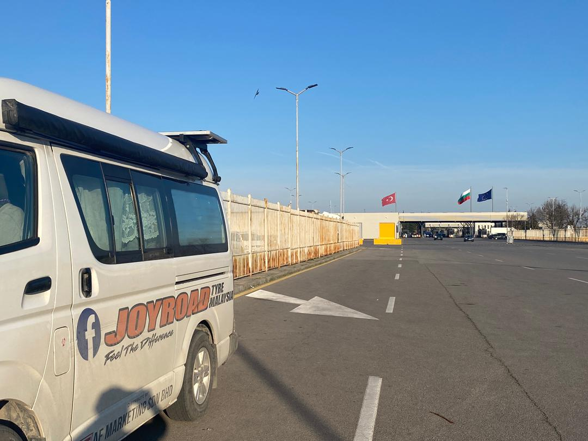

Real Story · 中文
立足大马，冲出亚洲，迈向欧洲。
24 March 2024，我到达 Bulgaria。 看到 Turkey、Bulgaria 和 EU 的旗在前方， 心里真的有一种很特别的感觉。 就像朋友说的那句话： 立足大马，冲出亚洲，迈向欧洲。
这一刻不是 tourist postcard。 是 Toyotaki 从 Malaysia 一路走到这里， 穿过 India、Nepal、Pakistan、Iran、Armenia、Georgia、Turkey， 然后终于停在 Europe 的门口。

Village Detour
A big round in the village, and a stork appeared.
I made a big round through the village, and that detour gave me the chance to take a video of a stork. This was still the tail end of winter. The female stork was laying eggs.
I thought: when I come back from Iceland, the eggs should have hatched. The road was moving forward, but the village had its own slower calendar.
Casino Parking
Europe village surprise: casinos, parking, and a hot-water toilet.
One thing I noticed in the Europe village area: there were quite a number of casinos. On 24 March, I overnighted at the casino parking lot near Kapitan Andreevo.
The surprising part was not the casino. It was the toilet. The toilet had a water heater. After so many road nights, this kind of small facility can feel like “omg”.
English Memory Summary
The Europe chapter opened at a border parking lot.
On 24 March 2024, Tuzi reached Bulgaria at Kapitan Andreevo. The moment carried the feeling of leaving Asia behind and stepping toward Europe: “立足大马，冲出亚洲，迈向欧洲.”
A village detour gave her the chance to film a stork at the tail end of winter. The female stork was laying eggs, and Tuzi imagined that when she returned from Iceland, the eggs might have hatched.
That night, she stayed at the casino parking lot near the Bulgaria border area. She noticed that European villages seemed to have quite a number of casinos, and the toilet there had a water heater — a small but memorable road-life comfort.
Heart Statement
Europe did not open with a grand gate. It opened with a stork, a casino car park, and hot water.
The road crossed into Europe quietly: flags ahead, a nesting stork in a village, and Toyotaki resting under casino lights.